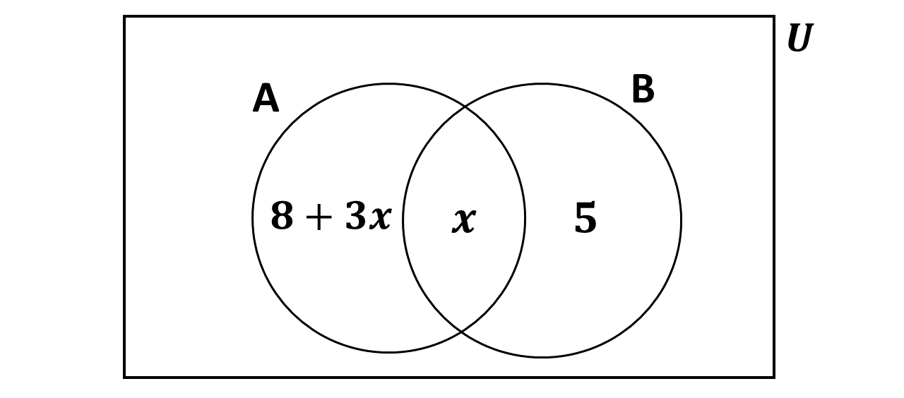

You have 60 minutes for each section. Try to work on your speed as you prepare
towards the final exam.
Good luck and remember to check your answers with the solutions provided.
If you have any questions, feel free to ask your teacher or refer to the video lessons for more help.
Section A - Multiple Choice Questions
This section contains 40 multiple choice questions. You have 60 minutes to complete it.
Each question has four options labeled A to D. Select the correct answer for each question.
60:00
Question 1 of 40
Your Test Results
You scored 0 out of 40
Question 1
In the Venn diagram below, $n(A) = 2 n(B)$. Find $x$.

$1$
$2$
$8$
$9$
Use the information below to answer questions 2 and 3.
The binary operation $*$ is defined on the set of rational numbers by $a * b = 2ab$
Question 2
Find the identity element.
$\dfrac{1}{4}$
$\dfrac{1}{2}$
$2$
$4$
Use the information below to answer questions 2 and 3.
The binary operation $*$ is defined on the set of rational numbers by $a * b = 2ab$
Question 3
Find the rational number that has no inverse under $*$.
$3$
$2$
$1$
$0$
Question 4
If \( \log_x 8 = 2 \), find \( x \).
\( 5 \)
\( 4 \)
\( 3 \)
\( 2\sqrt{2} \)
Question 5
The fifth term in ascending order, in the binomial expansion of $(2x - 1)^6$ is
$$-192x^5$$
$$-160x^8$$
$$60x^2$$
$$240x^4$$
Question 6
Evaluate \( \log_2(\sqrt{2})^6 \).
\( 1 \)
\( 2 \)
\( 3 \)
\( 4 \)
Question 7
Find the value of \( \sin^2(-30^\circ) + \cos^2(-30^\circ) \).
\( -1 \)
\( 0 \)
\( \frac{1}{2} \)
\( 1 \)
Question 8
If \( \cos x = -\frac{3}{5} \) for \( \frac{\pi}{2} < x < \pi \) and \( \sin y = \frac{5}{13} \)
for \( 0 < y < \frac{\pi}{2} \), find \( \cos(x + y) \).
\( \frac{63}{65} \)
\( \frac{33}{65} \)
\( -\frac{16}{65} \)
\( -\frac{56}{65} \)
Question 9
What term of the linear sequence \( -2, 1, 4, \ldots \) is 40?
\( 13^{\text{th}} \) term
\( 14^{\text{th}} \) term
\( 15^{\text{th}} \) term
\( 16^{\text{th}} \) term
Question 10
Find the general term of the sequence 18, 14, 10, 6, \ldots
\( 4n + 22 \)
\( 18 - 4n \)
\( 4 - 22n \)
\( 22 - 4n \)
Question 11
If \( x \) and \( y \) are non-zero real numbers, find the geometric
mean of \( x^2 \) and \( y^2 \).
\( \frac{x + y}{y} \)
\( xy \)
\( \frac{y}{x} \)
\( \frac{x}{y} \)
Question 12
Find the solution set of \( \cos 2\theta = 0.4832 \) for \( 0^\circ < \theta < 90^\circ \).
\( \{90^\circ\} \)
\( \{45^\circ\} \)
\( \{30.6^\circ\} \)
\( \{0^\circ\} \)
Question 13
If \( \sin \alpha = \frac{3}{\sqrt{10}} \), for \( 0 < \alpha < \frac{\pi}{2} \),
find \( \cos 2\alpha \).
\( \frac{1}{\sqrt{10}} \)
\( \frac{3}{5\sqrt{10}} \)
\( -\frac{3}{4} \)
\( -\frac{4}{5} \)
Use the information below to answer Questions 14 and 15.
Two functions are defined on subsets of the real numbers by $f:x \rightarrow \dfrac{2}{x - 1}$ and
$g:x \rightarrow \dfrac{1}{x}$.
Question 14
Find $(fog)(x)$
$1 - \frac{1}{x}$
$1 + \frac{1}{x}$
$\frac{2x}{1 - x}$
$\frac{x}{1 + x}$
Use the information below to answer Questions 14 and 15.
Two functions are defined on subsets of the real numbers by $f:x \rightarrow \dfrac{2}{x - 1}$ and
$g:x \rightarrow \dfrac{1}{x}$.
Question 15
For what value of $x$ is $(fog)(x)$ undefined?
$x = -1$
$x = 0$
$x > 0$
$x = 1$
Question 16
If $f(x) = x^2 - 3$ and $g(x) = 2x + 4$, find $(fog)(x)$.
$2x^2 - 2$
$2x^2 - 4x + 2$
$4x^2 + 16x + 13$
$4x^2 + 7$
Question 17
If $f:x \rightarrow 2x$ and $g:x \rightarrow 3x^2 + 1$, find $g[f(-1)]$.
$6$
$8$
$12$
$13$
Question 18
Find the inverse of the function $f(x) = \dfrac{x - 1}{3}$
$f^{-1}(x) = \dfrac{3}{x + 1}$
$f^{-1}(x) = 3x + 1$
$f^{-1}(x) = 3$
$f^{-1}(x) = \dfrac{3}{y + 1}$
Question 19
Which of the following graphs represent functions from their domain into $R$?
II and IV
I and IV
III and IV
II and III
Question 20
Find the equation of the straight line which intercepts the x-axis at 5 and the y-axis at -2.
\( 2x - 5y - 10 = 0 \)
\( 2x - 5y + 10 = 0 \)
\( x - 5y - 2 = 0 \)
\( x + 5y + 2 = 0 \)
Question 21
If \( P(2, -1) \) is a turning point of the graph of \( y = ax^2 + bx + 3 \), find
the values of \( a \) and \( b \).
\( a = 1, b = 4 \)
\( a = -1, b = 4 \)
\( a = 1, b = -4 \)
\( a = -1, b = -4 \)
Question 22
Calculate \( \Delta y \) given that \( y = 4 - 9x \) and \( \Delta x = 0.1 \).
\( 9.0 \)
\( 0.9 \)
\( -0.3 \)
\( -0.9 \)
Question 23
\( f(x) = 3x^2 - 12x + 5 \). If \( f'(x) = -3 \), find the value of \( x \).
\( 4 \)
\( 3 \)
\( \frac{3}{2} \)
\( \frac{5}{2} \)
Question 24
Find the average rate of change of the function \( f(x) = 2^x \) in the interval \( [-3, -2] \).
\( \frac{1}{4} \)
\( \frac{1}{8} \)
\( -\frac{1}{8} \)
\( -\frac{1}{4} \)
Question 25
If \( y = \frac{1}{3}x^3 - x^2 - 24x + 2 \), find \( \frac{dy}{dx} \).
\( 3x^3 - 2x - 24 \)
\( x^2 - 2x - 24 \)
\( 3x^2 - 2x - 24 \)
\( x^3 - 2x - 24 \)
Question 26
Evaluate \( \int_0^1 (x + 1)(x - 2) \, dx \).
\( \frac{7}{6} \)
\( \frac{5}{6} \)
\( -\frac{5}{6} \)
\( \frac{13}{6} \)
Use the graph below to answer questions 27 to 29.
The graph shows the cummulative curve for the marks, out of 50, scored by 20 students
in an examination.
Question 27
Find the $90^{\text{th}}$ percentile score.
$47.0$
$43.5$
$39.5$
$31.0$
Use the graph below to answer questions 27 to 29.
The graph shows the cummulative curve for the marks, out of 50, scored by 20 students
in an examination.
Question 28
If $5/%$ of the students had distinction, find the least mark scored for a distinction.
$39.5$
$43.5$
$45.5$
$46.5$
Use the graph below to answer questions 27 to 29.
The graph shows the cummulative curve for the marks, out of 50, scored by 20 students
in an examination.
Question 29
How many students, to the nearest whole number, scored between $30$ and $45$ marks?
$45$
$30$
$15$
$10$
Question 30
Find the area of the region enclosed by the curve \( y + 1 = x^2 \) and the \( x \)-axis.
\( 2 \)
\( \frac{4}{3} \)
\( 0 \)
\( -\frac{2}{3} \)
Question 31
The table below shows the age distribution in years of inhabitants of a small township.
Ages (in years)
0–9
10–19
20–29
30–39
40–49
No. of inhabitants
8
14
48
18
12
What is the median class?
\( 10-19 \)
\( 20-29 \)
\( 48 \)
\( 30-39 \)
Question 32
The table below shows the distribution in years of inhabitants of a small township.
Ages (in years)
0-9
10-19
20-29
30-39
40-49
No. of inhabitants
8
14
48
18
12
What is the probability that an inhabitant selected at random from the township was at least 30 years old?
\( 0.70 \)
\( 0.3 \)
\( 0.45 \)
\( 0.18 \)
Question 33
Given that \( P(X) = 0.3 \) and \( P(Y / X) = 0.15 \). Find \( P(X \cap Y) \).
\( 0.045 \)
\( 0.15 \)
\( 0.20 \)
\( 0.18 \)
Question 34
If a fair coin is tossed four times, what is the probability of getting at least one heads?
$\dfrac{3}{16}$
$\dfrac{1}{4}$
$\dfrac{13}{16}$
$\dfrac{15}{16}$
Question 35
A box contains 4 tickets numbered 1, 2, 3 and 4. Two tickets are drawn one
after the other, without replacement and their numbers added. Find the
probability that the sum is prime.
\( \dfrac{2}{3} \)
\( \dfrac{9}{16} \)
\( \dfrac{1}{2} \)
\( \dfrac{7}{16} \)
Question 36
$$
$$
$$
$$
Question 37
$$
$$
$$
$$
Question 38
The displacement \( S \) of a particle is given by \( S = 10i + (-1 - 2t^2)j \).
Find its velocity at time \( t = 2 \, \text{s} \).
\( -9j \)
\( -8j \)
\( 0 \)
\( 10i - 9j \)
Question 39
$$
$$
$$
$$
Question 40
Two forces \( 3\mathbf{i} \, \text{N} \) and \( 4\mathbf{j} \, \text{N} \) act on an object
of mass 5 kg. Find the acceleration of the object.
Use the information below to answer questions 41 and 43
A car starts from rest with a constant acceleration along a straight road and passes through a
point A to point B, 120 m apart in 4.0 s. The speed of the car at point B is 35 ms\(^{-1}\).
Question 41
What is the speed of the car at point A?
\( 25 \, \text{ms}^{-1} \)
\( 21 \, \text{ms}^{-1} \)
\( 25 \, \text{ms}^{-1} \)
\( 15 \, \text{ms}^{-1} \)
Use the information below to answer questions 41 and 43
A car starts from rest with a constant acceleration along a straight road and passes through a
point A to point B, 120 m apart in 4.0 s. The speed of the car at point B is 35 ms\(^{-1}\).
Question 42
What is the acceleration of the car?
\( 8 \, \text{ms}^{-2} \)
\( 6.7 \, \text{ms}^{-2} \)
\( 2.5 \, \text{ms}^{-2} \)
\( 1.67 \, \text{ms}^{-2} \)
Use the information below to answer questions 41 and 43
A car starts from rest with a constant acceleration along a straight road and passes through a
point A to point B, 120 m apart in 4.0 s. The speed of the car at point B is 35 ms\(^{-1}\).
Question 43
What distance, correct to the nearest metre, did the car cover before reaching A?
\( 166 \, \text{m} \)
\( 160 \, \text{m} \)
\( 125 \, \text{m} \)
\( 110 \, \text{m} \)
Use the information below to answer questions 44 and 45
An electric lamp hangs vertically from a light cord attached to the ceiling of an elevator.
The elevator is descending with a deceleration of 2 ms\(^{-2}\) and tension in the cord is 25 N.
Question 44
What is the mass of the lamp?
\( 2.1 \, \text{kg} \)
\( 3.2 \, \text{kg} \)
\( 2.1 \, \text{kg} \)
\( 4.0 \, \text{kg} \)
Use the information below to answer questions 44 and 45
An electric lamp hangs vertically from a light cord attached to the ceiling of an elevator.
The elevator is descending with a deceleration of 2 ms\(^{-2}\) and tension in the cord is 25 N.
Question 45
What is the tension in the cord when the elevator is ascending with an acceleration of 2 ms\(^{-2}\)?
\( 15.0 \, \text{N} \)
\( 16.4 \, \text{N} \)
\( 17.0 \, \text{N} \)
\( 25.0 \, \text{N} \)
Question 46
If the graph of \( y = x^2 \) is translated by the vector \( \begin{pmatrix} -4 \\ -2 \end{pmatrix} \),
find the equation of the resulting graph.
\( (x - 4)^2 + 2 \)
\( (x + 4)^2 + 2 \)
\( (x + 4)^2 - 2 \)
\( (x - 4)^2 - 2 \)
Question 47
If \( P = \begin{pmatrix} 5 & 3 \\ 3 & 2 \end{pmatrix} \), find \( P^{-1} \).